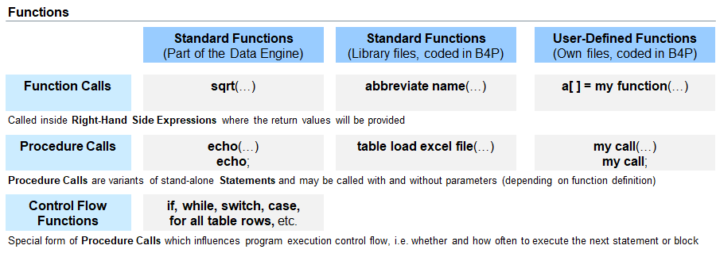

Introduction
B4P provides an extensive library of standard functions with an emphasis on processing complex tables and data structures. Some of the standard functions
are part of the B4P Data Engine where other functions are provided in B4P function libraries (which are coded in B4P). You can also define your own functions.

Rules
- The term Function is the generic term related to all B4P procedures and functions defined.
- Function names support spaces. More info, see seciton on Function Naming.
- Some of them can only be called as procedures, as functions, and as both procedures and functions.
- Some functions require a fixed number of function parameters where other functions provide allow a variable number of parameters.
- Procedure calls with zero parameters require not parentheses. Example: print bar;
- Function calls witzh zero parameters require parentheses. Example: sum()
- The function parameters may have different function parameter directions (input, output, etc.).
User-Defined Procedures and Functions
B4P provide a convenient method to create user-defined procedures and user-defined functions and call them up as if they would be part of the standard B4P function library. You can even create you own B4P library files containing your frequently used functions you have written so they are available at your discretion whenever you need them. See Introduction to user-defined functions for details.